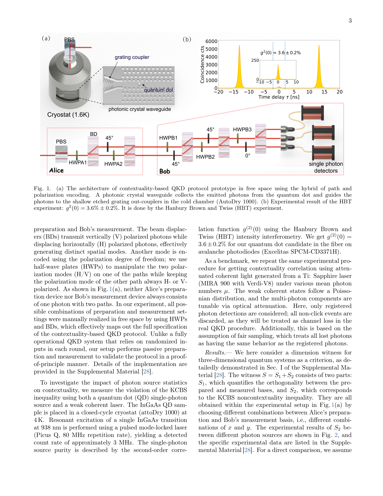
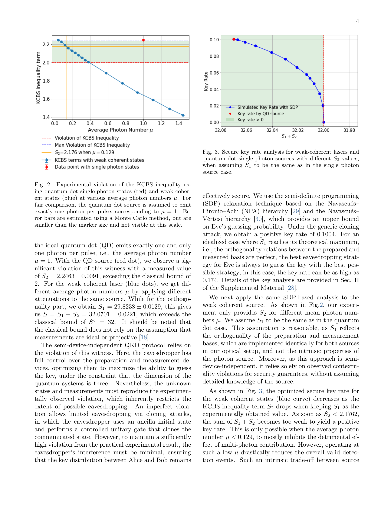

저자: Meng Yu, Debashis Saha, Mikkel T. Mikkelsen, Henke, Clara, Ying Wang, Nikolai Bart, Arne Ludwig, Peter Lodahl, Adán Cabello, Leonardo Midolo | 날짜: 2025-10-14 | DOI: 10.48550/arxiv.2510.12761

Fig. 1.
InAs(Ga)As 양자점 기반 고순도 단일광자 원을 이용하여 양자 문맥성(quantum contextuality)을 생성하고, 이를 통해 반장치 독립적(semi-device-independent) 양자키 배포 프로토콜을 자유공간 채널에서 구현했다.

Fig. 3. Secure key rate analysis for weak-coherent lasers and
Fig. 1.
총평: 본 논문은 양자점 단일광자 원의 고유한 특성을 양자 문맥성과 결합하여 반장치 독립 QKD의 새로운 실현 경로를 개척한 중요한 기여이며, 이론적 우월성을 실험적으로 명확히 입증했다. 실제 양자 네트워크 배포에 한 걸음 더 가까워진 의미 있는 진전이다.